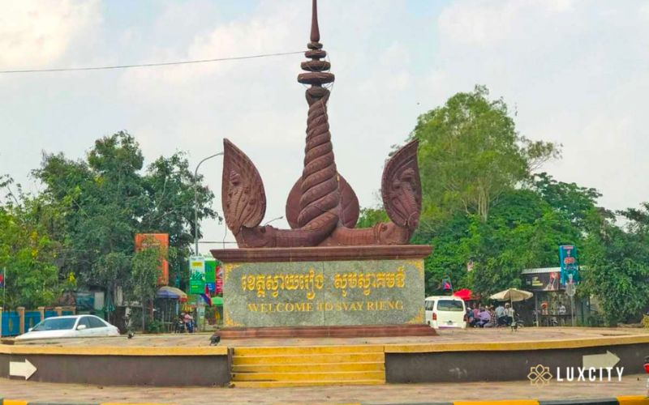

Svay Rieng (Khmer: ស្វាយរៀង, UNGEGN: Svay Riĕng [sʋaːj riəŋ], lit. 'The Mango's Range') is a province (khaet) in Cambodia. Located in the southeast, the province juts into Vietnam (Long An and Tây Ninh), which surrounds it to the north, east and south. The only other Cambodian province to border Svay Rieng is Prey Veng. The capital is Svay Rieng while the largest city is Bavet, which is the international border between Cambodia and Vietnam. The state religion is Theravada Buddhism. More than 99.8% of the people in Svay Rieng are Buddhists, It's the second most Buddhist province in the country. Chams have been practicing Islam for hundreds of years. A small percentage follow Christianity.
